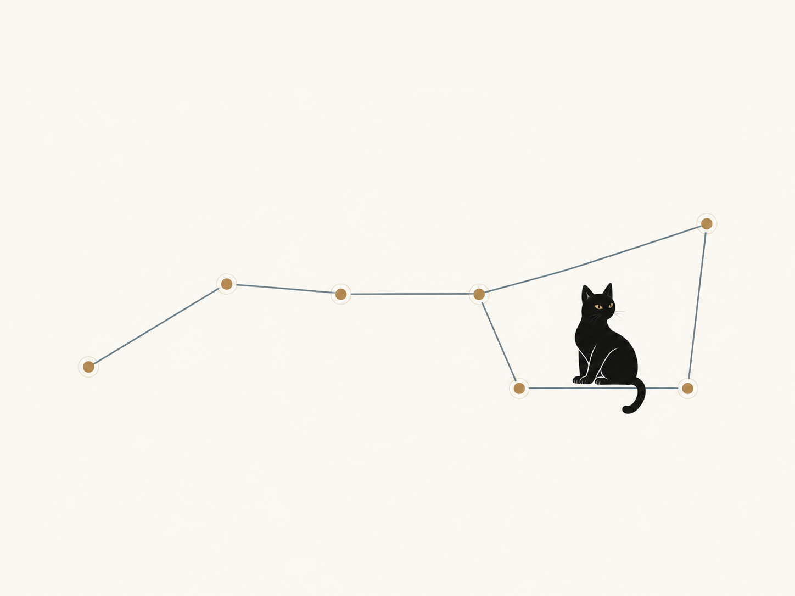
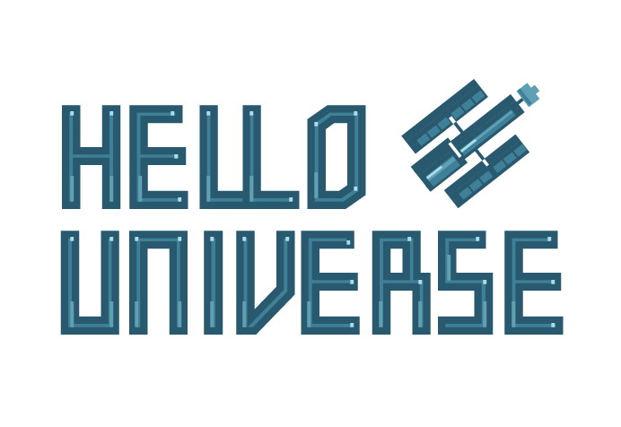

Mentoring Malpractice
A sharp look at the responsibilities of mentors and the ways a relationship intended to help can go wrong.
FIELD NOTES
Tools and reading on research practice, teaching, and language AI.

A FRAMEWORK, NOT A UNIVERSAL RULEBOOK
Research groups do not all have the same goals. This paper argues that useful language-AI policies start with those goals, then make the trade-offs explicit.
Use The Policy Lab to allocate a limited budget across eleven priorities and explore the trade-offs.
Machine-learning-ready astronomical data, paired with tutorial notebooks from MAST. Explore how classification, regression, and clustering methods connect to real observations.
These examples make the step from learning an algorithm to working with astronomical data more approachable.
Explore Hello Universe
A Referee Primer for Early Career Astronomers is a coauthored guide to evaluating manuscripts and writing fair, useful referee reports. A starting point for researchers taking on the responsibility of peer review.
Read the Referee PrimerOTHER PEOPLE'S EXCELLENT WORK
A sharp look at the responsibilities of mentors and the ways a relationship intended to help can go wrong.
Samuel Mehr on how to build a lab handbook for a small research group, and why making expectations, working practices, and shared values explicit helps both the science and the people doing it.
Practical guidance for writing recommendation letters that evaluate candidates fairly and communicate their strengths clearly.
Vineet Chopra and Sanjay Saint provide a useful perspective on making mentoring relationships more intentional, reciprocal, and productive.
Very different datasets can share nearly identical summary statistics. A memorable reminder to look at the data, not just the numbers.
A public example of how a major astronomy fellowship communicates its evaluation criteria to applicants and reviewers.